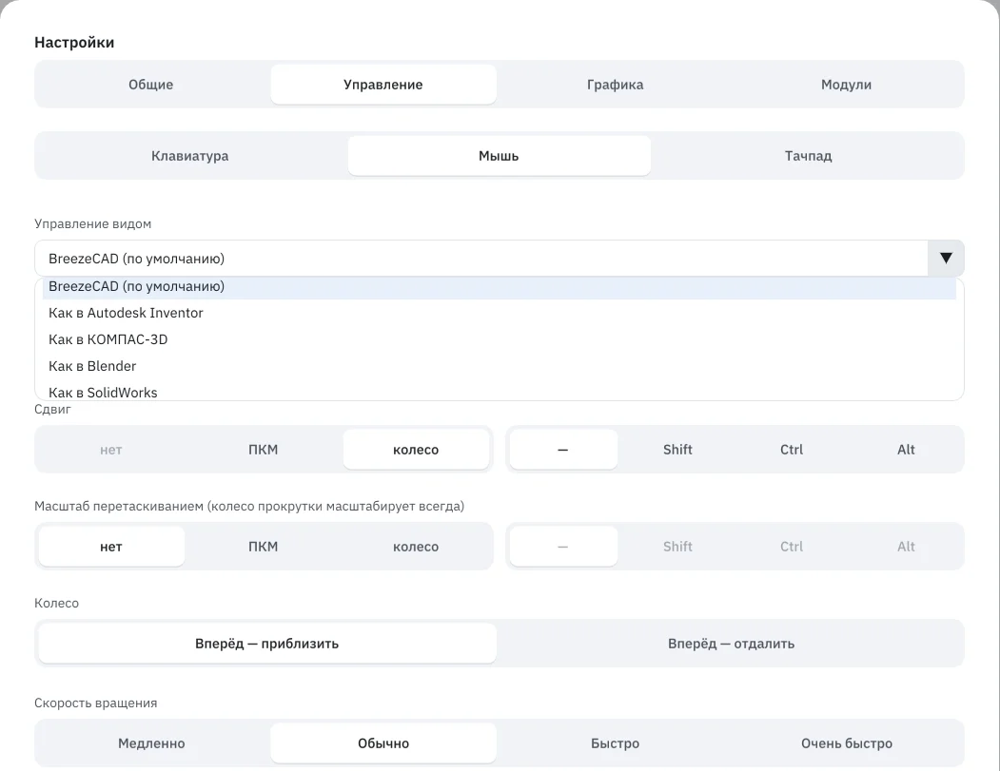
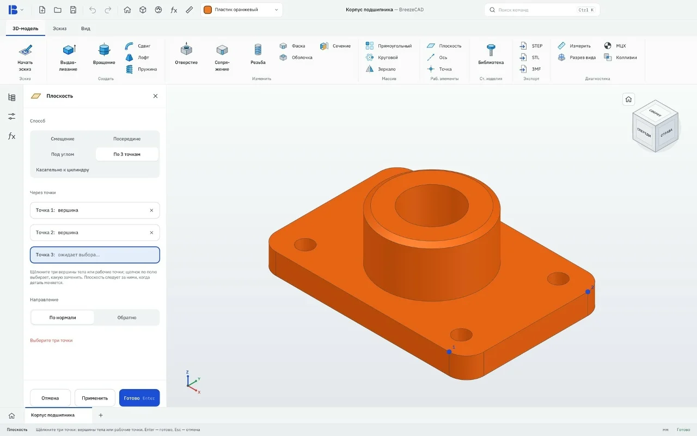
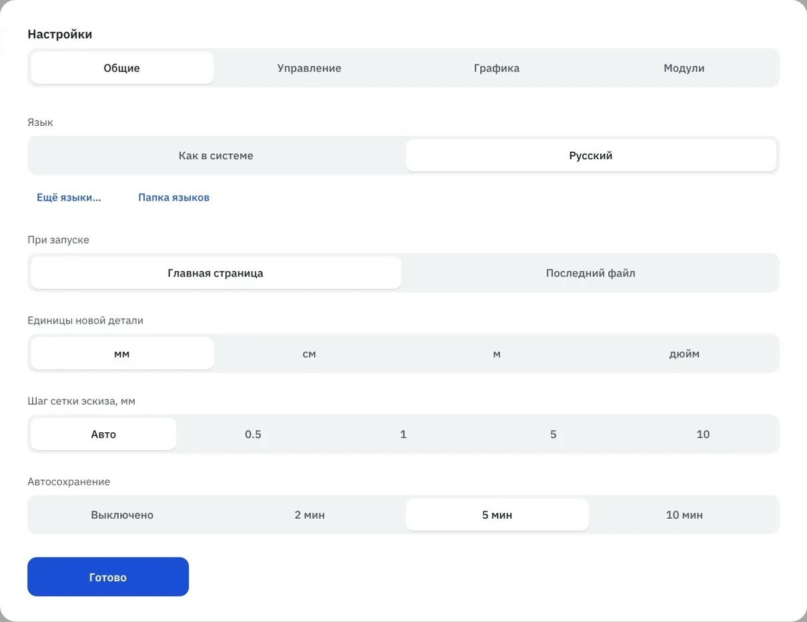

Сделано из боли.
Я годами работаю в САПР — и годами что-то в них меня бесило. Здесь самое болезненное и то, как это решено в BreezeCAD.
— Михаил Верхолашин, автор программы
Чья это мышь?
В течение дня у меня открыты три-четыре программы — и у каждой своё мнение о мыши. В одной зажатое колесо двигает деталь, в другой то же движение её вращает. Колесо где-то приближает, где-то отдаляет. К обеду рука уверенно крутит деталь не туда.
Управление подстраивается под вас.
- Готовые наборы мыши — как в Inventor, КОМПАС-3D, SolidWorks и Blender: выбрал один, и руки работают как привыкли.
- Или свой: вращение, сдвиг и масштаб на любую кнопку с Shift, Ctrl или Alt, направление колеса, скорость и стиль вращения.
- Сочетания клавиш — готовыми наборами или как угодно. Свой набор сохраняется в файл и переезжает с вами на другой компьютер.
- Отдельная вкладка для тачпада: два пальца с модификаторами, щипок, поворот.
Руки помнят — программа подстраивается.

- 1Готовые наборы управления
- 2Любая кнопка + Shift, Ctrl или Alt
- 3Направление колеса
Резьба, которая есть только на картинке
Нарезал резьбу, отправил в слайсер — а там гладкий цилиндр. Резьба была условной, просто рисунком на грани. Хочешь напечатать — строй витки вручную и вспоминай, какой там шаг у M8.
Резьба, которая печатается.
- Щелчок по валу или отверстию — и размер определяется сам. Отверстие 6,8 мм программа узнает как отверстие под M8.
- Шаг — крупный по ISO, мелкий можно вписать руками.
- Витки — честная геометрия ISO 60°: в STL и 3MF они уходят сразу.
- Модель тяжёлая? Резьбу можно показывать условно — в экспорт всё равно уйдёт настоящая.
Один щелчок — дальше дело за принтером.

- 1Размер — сам: M30×3,5
- 2Шаг — крупный по ISO
- 3Настоящие витки — сразу в STL и 3MF
За окном не видно то, что хотел нажать
Включаешь измерение — и окно с результатом встаёт ровно на то ребро, которое надо щёлкнуть. Строишь плоскость по трём точкам, на третьей промахнулся — и выбор сбросился. Начинай заново.
Никаких окон поверх модели.
- Результаты измерения — в левой панели: расстояние, ΔX/ΔY/ΔZ, площади, радиусы и кнопка «Копировать». На модели — только линия и подпись.
- У каждого выбранного элемента своё поле с крестиком: сбросить можно одну точку, а не всё сразу.
- Щелчок мимо ничего не сбрасывает.
Посчитайте, сколько раз за день вы двигаете окна.

- 1У каждой точки своё поле
- 2Модель ничем не закрыта
- 3Выбранные точки — прямо на модели
Ctrl+S после каждой операции
У каждого конструктора есть рефлекс: сделал операцию — Ctrl+S. Его не выдумали, его выдрессировали. Обычно ценой нескольких часов работы, которые исчезли вместе с окном программы.
Работа не пропадёт.
- Автосохранение раз в 2, 5 или 10 минут — даже посреди эскиза.
- Копия пишется в паузе, пока вы ничего не трогаете, поэтому ничего не подвисает.
- На каждый документ хранятся три последние копии.
- После сбоя на главной появляется «Несохранённая работа»: одна кнопка — и вы там, где остановились.
- А если программа всё-таки упадёт — окно с кодом ошибки, который можно скопировать и прислать.
Ctrl+S — теперь привычка, а не страховка.

- 1Раз в 2, 5 или 10 минут
А что бесит вас?
Рубрика продолжается в группе ВКонтакте. Расскажите в комментариях, что мешает вам в САПР, — возможно, следующий выпуск будет про вашу боль.